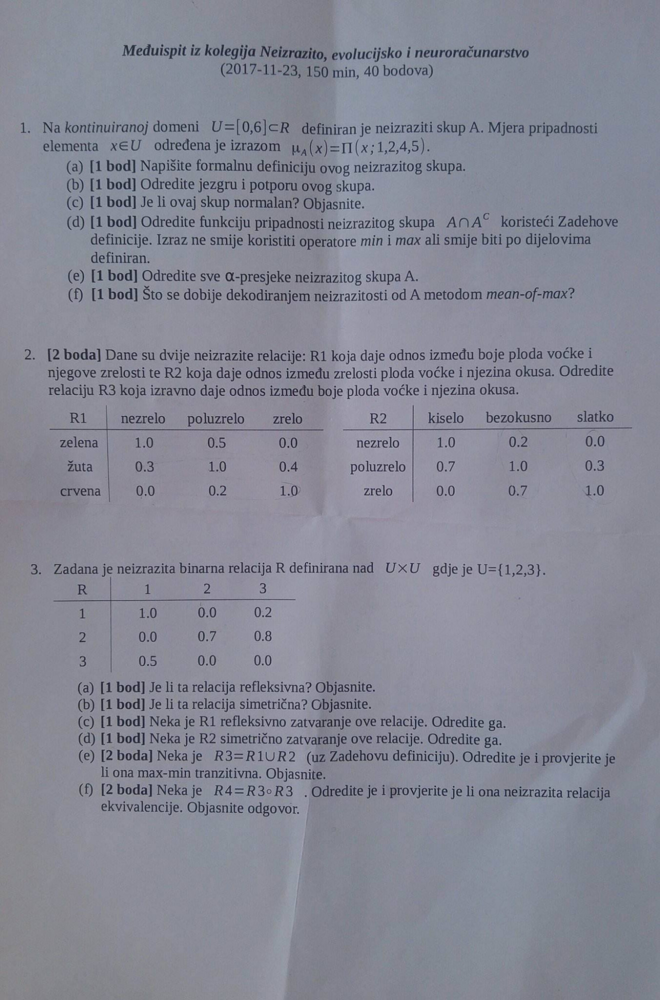
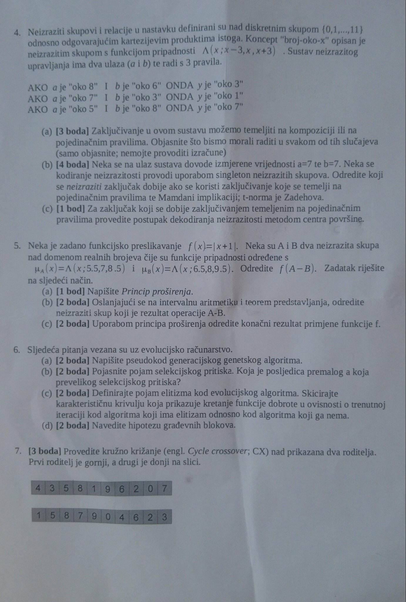
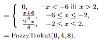
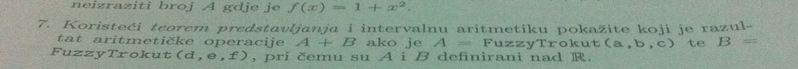
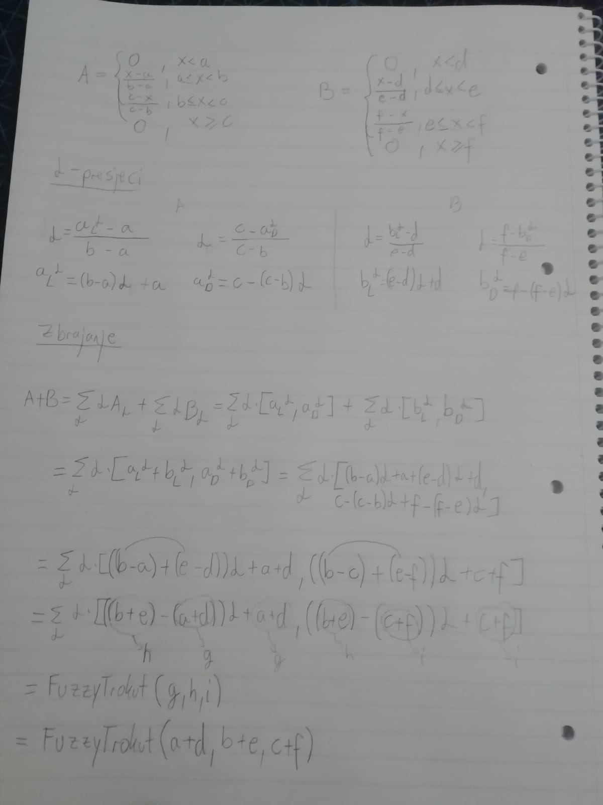
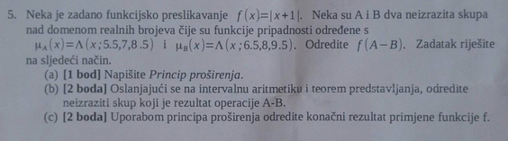
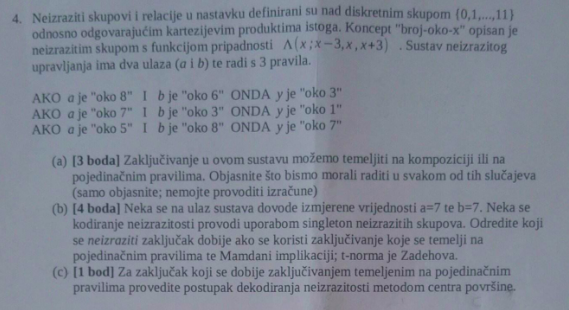
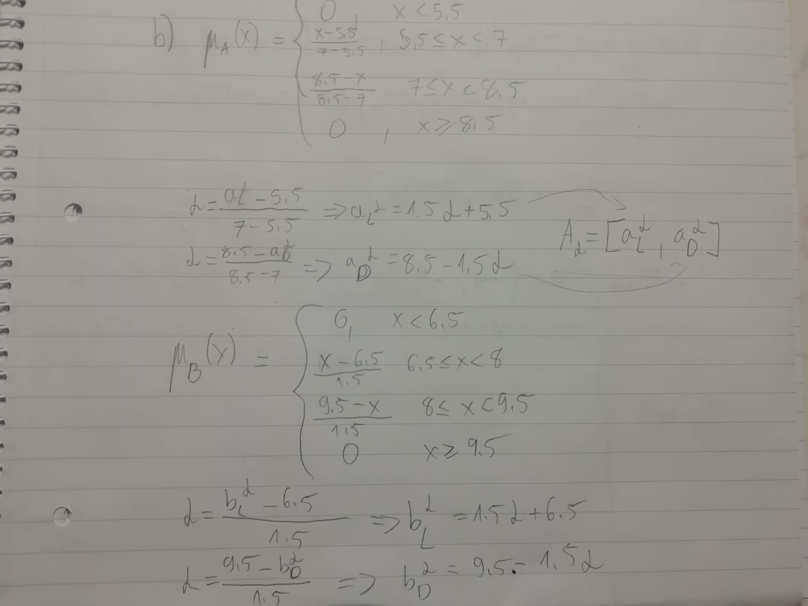
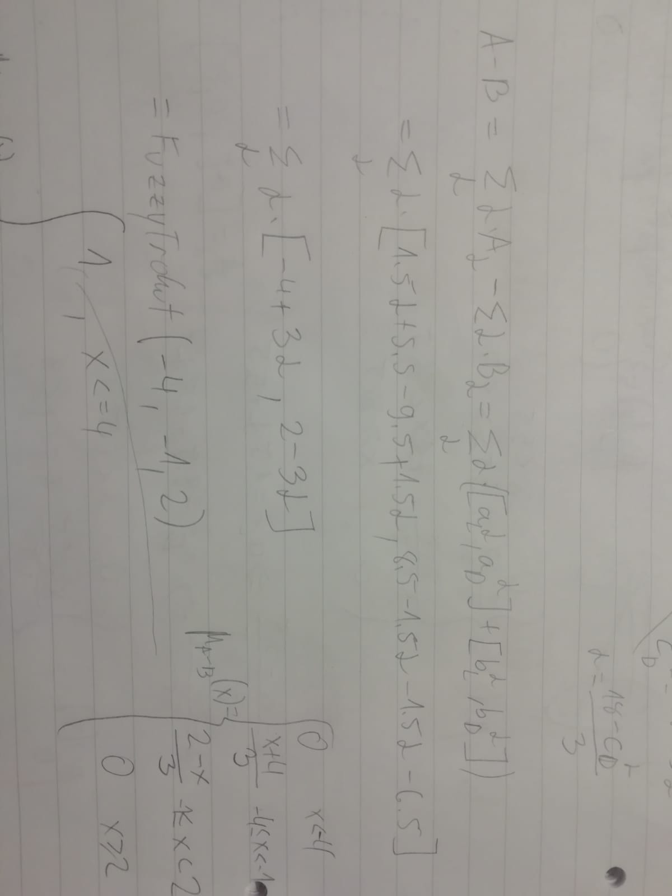

ima li netko da je lijepo i uredno riješio (dokazao) sve zadatke s prezentacija da uslika?
Jel netko riješio MI 2011/12 i MI 2017/18?
miki123 gdje se može naći iz 2017.?
MJ3  
Nebi li ovo trebao biti FuzzyTrokut(-6, -2, 2)? 
VrloZbunjen da brijem da su slučajno prepisali to krivo.
 ima itko rješenje ovoga? also, ima netko kakve zadatke za genetske algoritme, što očekivat iz toga?
sphera Rješenje toga je poglavlje 6.2.2 u knjizi
sphera Nadam se da se vidi 
Trebamo li znati vrste implikacija napamet osim Mamdanijeve i one s produktom iz labosa?
Kak u ovom pod c) proširiti to? Jel smijemo diskretizirati ili se to direkt nad realnim brojevima moze? Dobio sam da je A - B = FuzzyTrokut(-4, -1, 2), kak se to proširi?

VrloZbunjen Nacrtaj si samo A - B, onda A - B + 1 i onda grafički možeš
VrloZbunjen mozes li staviti postupak?
ima netko i ovaj, najviše me b dio zanima?
antesha Jel bi onda bilo (x-3)/3 za 0<x<3, a 0 inače? (Kad funkcija ima | |)
Nije baš najurednije al evo  
Kako se gleda kardinalitet neizrazitog skupa? Je li to kardinalitet njegove domene ili broj elemenata koji imaju pripadnost veću od 0?
FICHEKK
Samo zbrojiš sve pripadnosti
antesha to je apsolutni al kad zbrojiš pripadnosti i podijeliš s kardinalitetom univerzalnog skupa imaš relativni
Kako bi izgledali alpha presjeci u prvom zadatku sa MI 2017.?
Cvija
Samo izraziš lijevu i desnu granicu preko alfe, \sum_\alpha \alpha[\alpha + 1, 5 - \alpha]